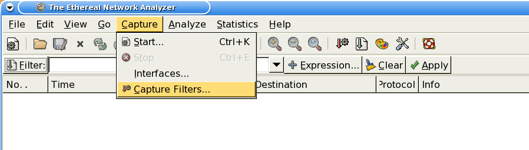
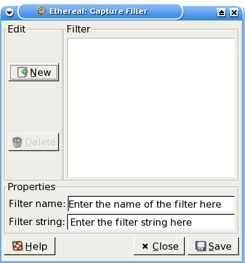
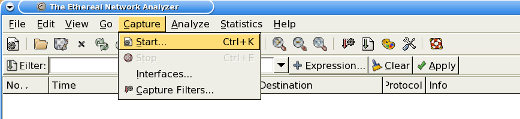
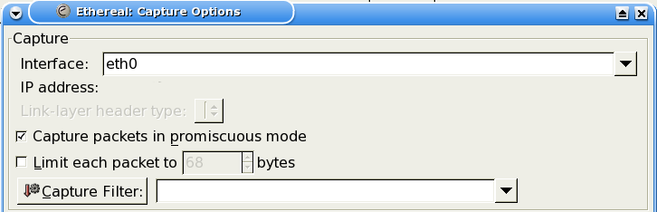
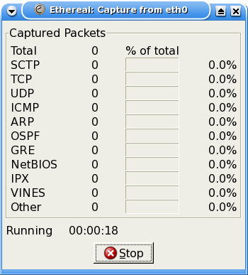

Back to Index page
Basic Filter Set
- Edit | Capture Filters...

- You will see the Filter List form

- Enter the filter name into the "Filter Name:" textbox
- Enter your filter string into the "Filter String:" textbox
- Click on "New"
- Click on "Save"
- That's all there is to it!
To use your filters is just as easy
- Select Start...

- Press Filter: or enter the filter string directly into the textbox

- Press OK
- You should now see the Ethereal/Wireshark Capture form

- Press Stop when you are done capturing
Back to Index page
Basic Filter Set
Please direct comments, suggestions and
questions to Mike
204779